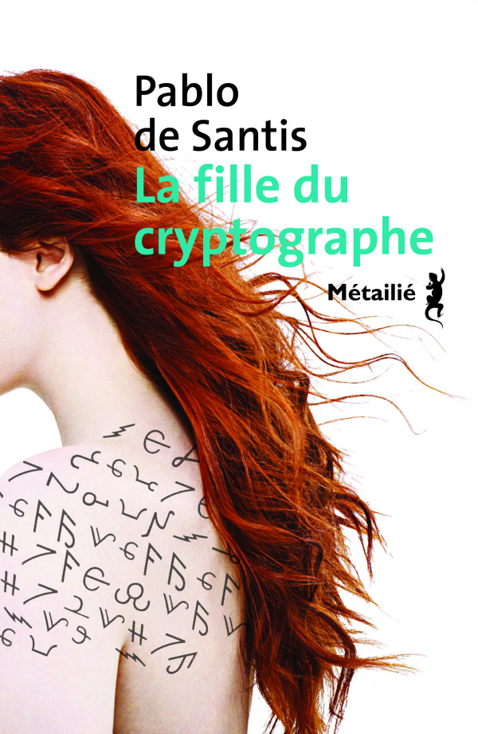

La fille du cryptographe
Dans la fille du cryptographe, roman écrit par Pablo de Santis, et qui se passe en Argentine dans les années 1970, le héros, Miguel Dorey, est enfermé dans le sous-sol d'un immeuble. Il doit décrypter des messages secrets échangés par les révolutionnaires... 
Un matin de septembre 1977, Lemos vint à ma table et se plaça derrière moi pour observer mon travail. J'avais commence à me comporter avec Lemos comme avec le major; et s'il se mettait à lire mon travail par-dessus mon épaule, je me limitais à rester immobile et à transpirer. Mais cette fois, comme la scène se prolongeait, je tournai la tête et le vis dubitatif, un papier à la main, comme s'il hésitait à me le donner.
- C'est important. Laisse tomber tout le reste. Ils veulent une réponse urgente.
Je lus le papier. Quelqu'un avait écrit au crayon :
Je relus plusieurs fois : je percevais dans cette succession de lettres un élément vaguement familier. Je savais que j'avais déjà vu ce message quelque part. Je pensais d'abord aux exercices que nous donnait Colina Ross, et que Tarrés résolvait si rapidement. Mais ce message murmurait autre chose, pas la sérénité que procurent les exercices dépourvus de toute autre nuance émotionnelle, comme les mots croisés. Quelque chose m'inquiétait.
- Rien de plus? demandai-je.
- Rien de plus. J'ai essayé, Crámer a essayé. Il ne reste que toi.
- Qu'est-ce que c'est?
- Je ne sais pas. Mais Blasco insiste.
- D'où ça vient?
- Comment veux-tu que je le sache? Ce sont des trucs qui sortent de temps en temps.
- C'est un nom?
- Peut-être. Mais ça peut être n'importe quoi.
C'était trop long pour être un nom, mais il était logique de penser que si quelqu'un codait un nom, il ajouterait un mot pour que le nombre de lettres ne donne aucune piste sur sa signification.
Ce fut après avoir travaillé quelques heures, en cherchant les répétitions, que j'ai soudain pensé à Barnes. J'étais sûr que c'était le message que m'avait passé Barnes lorsqu'il était entré, maigre et spectral, dans le bar de Boedo. J'avais rangé le papier entre les pages de Vies imaginaires et je n'avais pas essayé de déchiffrer un seul signe. Et voilà que le message me revenait, comme reviennent les choses dans les cauchemars.
Je me gardai bien de dire à Lemos que ce message avait été un jour destiné à Crámer. J'étudiai les lettres. La plupart des messages étaient l'oeuvre d'amateurs, écrits selon un code unique, et donc faciles à percer, même quand les espaces entre les mots étaient supprimés. La fréquence d'apparition d'une lettre restait le meilleur moyen pour commencer à déchiffrer un texte. Mais il suffisait d'un coup d'oeil pour que je me rende compte que ce n'était pas un message de substitution simple.
Je cherchai les répétitions. Les répétitions sont toujours le bout de l'écheveau pour déchiffrer des messages. Je n'avançais pas.
Quand Blasco vint me demander la solution, je remarquai un léger tremblement d'anxiété de ses mains.
- Vous avez trouvé, 148?
- Non, pour le moment, c'est impossible.
- Je ne connais pas la signification du mot "impossible".
- Si le texte était plus long...
- Il n'y a rien de plus. C'est tout ce que nous avons. Je voudrais entendre votre avis.
- Il est sûr,à cause de la variété de lettres, que c'est écrit avec une clé changeante. Le première fois qu'apparaît un A est changée, par exemple, par un F; la deuxième, par un Z.
- Qu'est-ce que vous avez noté là?
Blasco dégagea de mes notes un diagramme que les cryptographes connaissent sous le nom de carré de Vigenère.

- C'est le plus commun des systèmes de codage, lui dis-je.
Il existait de nombreux systèmes de chiffrement. Mais je savais que ce message avait été chiffré par Barnes et qu'il préférait ce carré à tous les autres du système de Vigenère. Il l'admirait pour son économie et son élégance.
- Comment ça fonctionne? voulut savoir Blasco.
- Supposons que notre abécédaire se réduise à cinq lettres : ABCDE. Dans un message chiffré, chaque lettre pourra être remplacée par elle-même et par les quatre autres. Ce qui donnerait le tableau suivant : $$\begin{array}{ccccc} A&B&C&D&E\\ B&C&D&E&A\\ C&D&E&A&B\\ D&E&A&B&C\\ E&A&B&C&D \end{array}$$
- Imaginez que je veuille transmettre le mot BECA (bourse). Je conviens à l'avance d'un mot clé avec le destinataire du message. Par exemple: DEA. Ce mot m'indiquera quelle ligne horizontale je dois choisir pour chiffre chacune des lettres. Pour chiffrer BECA, je m'assurerai d'abord quelle lettre correspond à B sur la ligne du D, puis je chercherai le E sur la ligne du E, le C sur la ligne du A, et finalement le A sur la ligne du D, puisque le mot clé est plusieurs fois réutilisé.
Blasco prit un crayon et écrivit quelques annotations.
- Pour chiffrer BECA selon la clé DEA, ce serait donc EDCD.
- Exact.
- Si vous savez déjà comment déchiffrer le message, pourquoi vous ne le faites pas?
- Je ne suis pas sûr qu'il ait été chiffré avec ce carré.
- Vérifiez si c'est le cas.
- Je ne connais pas le mot clé. Ce pourrait être n'importe quoi. Le nom d'un pays, d'une plante, d'un peintre. Ça peut ne pas être un mot, mais une phrase, ou une suite aléatoire de lettres, ce qui rendrait tout plus compliqué. Si c'était un message plus long, je pourrais chercher les articles et les prépositions, et tenter de retrouver des répétitions, pour savoir au moins combien de lettres comporte le mot clé. Mais c'est tellement bref....
Blasco regarda mon carré de lettres et le mit dans sa poche.
- Vous avez peut-être besoin d'un petit séjour dans la pièce du fond pour retrouver l'inspiration. Dans l'obscurité, on est face à soi-même et on entend plus clairement la voix intérieure.
Mais Blasco ne pouvait pas se concentrer longuement sur quelque chose. Quand il regarda ma table le lendemain, il commença à me donner des ordres au sujet d'autres documents, sur lesquels j'avais avancé et je pouvais lui donner du nouveau.
- Vous travaillez bien, 148. Mais n'oubliez pas l'autre message. Je vais être absent quelques jours. Je dois aller chercher du matériel. Pendant ce temps, Lemos sera chargé de cette affaire. Ne le décevez pas.
Les jours suivants, Lemos se montra insistant. Par moments il semblait sur le point de me frapper, ou bien il passait devant ma table et me disait à voix basse : "Souviens-toi de Cimer". A d'autres moments, oubliant sa violence, il se mettait à me parler comme à un ami, me demandait ce que j'allais faire le jour où je sortirais d'ici, et après avoir écouté mes réponses évasives et mes monosyllabes, il m'implorait de résoudre cette énigme. J'étais intrigué que Lemos, loin de Blasco, continue à me parler de ce message. Je me demandais de nouveau s'il savait que le message était originellement destiné à Crámer. Si quelqu'un pouvait le déchiffrer, c'était Crámer, qui savait sûrement de quoi il s'agissait, mais avait échappé à ce qu'on le charge de cette tâche.
A un moment donné, j'ai pensé demander à Blasco de me fournir du papier carbone pour faire des doubles du carré de Vigenère et ne pas avoir à le reproduire chaque fois que la feuille se déchirait à force d'annotations et d'usage de la gomme. Mais je me ravisai, l'instinct me suggérait de n'attirer l'attention en aucune manière. C'était mieux ainsi : plus laborieux serait le travail, plus il prendrait du temps.
Lorsque je résolus l'énigme, six jours après qu'elle m'eut été soumise, ce ne fut pas à l'issue d'heures de concentration et de calculs patients, mais tout à coup, comme une révélation. Ce qui me conduisit à la solution ne tenait pas à l'aspect littéral du message, mais à la façon dont il m'était parvenu la première fois. Je revis Barnes, avec sa veste en cuir, entrant dans le bar de Boedo, avec son message dans la poche. "Pour Crámer", avait-il dit. Peut-être n'avaient-ils pas réussi à se mettre d'accord sur un même mot clé, de sorte que la clé devait être quelque chose que Crámer puisse supposer, deviner. Quelque chose qui était pour Crámer une obsession.
J'avais déjà essayé de nombreux mots. Je me suis concentré sur Crámer, qui était à quelques pas de moi. J'avais du mal à résister à la tentation de lui demander : quel est ton mot magique? Dans ta dernière conversation avec Barnes, de quoi avez-vous parlé? De même que je n'avais pas informé Lemos de ma dernière rencontre avec Barnes,de même je ne voulais pas que Crámer soit au courant du message, surtout maintenant que je supposais qu'il en était le véritable destinataire.
Je me rappelai un vieux tour de prestidigidation que m'avait appris un ami quand j'avais dix ans. Il m'avait montré une enveloppe et demandé de choisir un nombre, une couleur, et un métier. Quand j'ai dit "menuisier", il m'a donné l'enveloppe, d'où j'ai sorti une carte où était écrit le mot correct. Il n'a pas tardé à m'expliquer le truc : tout le monde répondait "menuisier". Dans un recoin de la mémoire, le mot "métier" et le mot "menuisier" étaient connectés.
Je devais trouver le "menuisier" de Crámer. Le mot évident, le premier auquel il pouvait penser. J'essayai CORDOBA, sa ville natale. J'essayai COLINA ROSS, son ennemi. Avec n'importe qui d'autre, j'aurai essayé des prénoms de femme. Mais aucune femme ne tourmentait le célibataire Crámer. Dans une conversation, je lui fis croire que j'avais de la famille à Cordoba pour le demander le prénom de sa mère, Estela. Mais cela ne donna aucun résultat.
A la fin, j'essayai avec MALDANY. Je cherchai le Q sur la ligne du M, le L sur la ligne du A.... Aussitôt apparurent les premiers mots de la solution :
\begin{align*} &QLYRMOPQEDHLRMZOCDCBJUNLUOFQ\\ &ELNOMBREES... \end{align*}Je faillis crier que j'avais trouvé, que j'avais la clé. J'étais tellement absorbé par ce jeu que j'avais oublié qu'il pouvait produire d'énormes effets sur le monde réel. Il me restait à traduire le reste du message. Le nom. Et quand j'eus déchiffré la totalité du message, je me raidis sur ma chaise en réprimant toute réaction. Jamais dans ma vie je ne fus aussi immobile. J'avais l'impression que tous les yeux étaient braqués sur moi et que Lemos me scrutait comme si chacun de mes gestes pouvait traduire les pensées que je cachais.
A l'instant où j'avais trouvé la réponse, je crus que j'étais victime d'une hallucination provoquée par l'enfermement et l'obsession. Un disciple de Wittgenstein, Julius Orff, avait prouvé qu'à un message secret donné ne correspondait pas une solution unique; arrivé à un certain degré d'obsession, le cryptanalyste pouvait projeter sur des signes inconnus le miroir brisé de sa propre mémoire et ainsi trouver dans les mots des indices d'un fait lointain ou le prénom d'une femme perdue. Champollion lui-même croyait voir parfois les hiéroglyphes égyptiens rimer avec les formules rituelles que sa mère, une femme ignorante et superstitieuse, prononçait à chaque activité de la vie quotidienne, quand elle faisait le ménage ou la cuisine. Les manuels de cryptographie mettaient en garde contre ces mots fantômes que les patients amputés perçoivent comme réels - qui remontaient du fond de la mémoire jusqu'à la conscience, pour indiquer quelque chose qui s'était perdu ou n'avait pas été résolu.
J'avais écrit le nom sur une feuille quadrillée, mais je ne pouvais pas la jeter à la poubelle, parce qu'ils l'auraient trouvée. J'aurais voulu que mon écriture, nette et claire, soit aussi incompréhensible que le galimatias de mes élèves. Je ne pouvais pas non plus la déchirer, parce que nous devions laisser les papiers intacts, même les brouillons, afin de nous rappeler que nous-mêmes, déchiffreurs, pouvions faire l'objet d'un travail de déchiffrement. Alors j'écrivis une lettre sur l'autre, comme si j'essayais des combinaisons, comme si l'illusion et la désillusion alternaient dans un jeu obsédant, et je remplis la feuille jusqu'à ce que l'encre noircisse et finisse par ensevelir le nom interdit:
\begin{align*} &QLYRMOPQEDHLRMZOCDCBJUNLUOFQ\\ &ELNOMBREESELEONORACOLINAROSS \end{align*}